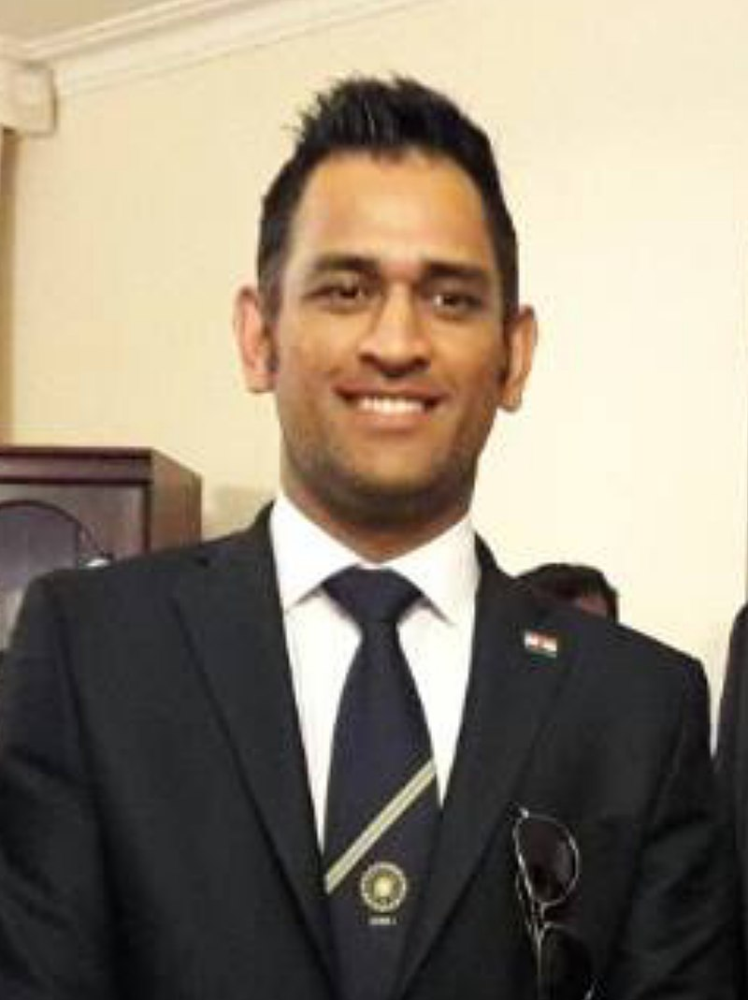

Mahendra Singh Dhoni (/məˈheɪndrə ˈsɪŋ dhæˈnɪ/ ⓘ; born 7 July 1981) is an Indian professional cricketer, who plays as a wicket-keeper-batsman. He was the captain of the Indian national team in limited-overs formats from 2007 to 2017 and in Test cricket from 2008 to 2014. He plays for and captains Chennai Super Kings franchise in the Indian Premier League. Born in Ranchi, Bihar (now in Jharkhand),[2][3] His exceptional wicketkeeping skills allowed him to become the regular wicketkeeper at the Commando Cricket Club (1995–1998), he was picked for the 1997/98 season Vinoo Mankad Trophy Under-16 Championship, where he performed well.[4] From 2001 to 2003, He worked as a Travelling Ticket Examiner at Kharagpur railway station under South Eastern Railway in Midnapore, in West Bengal.[5][6] In Indian domestic cricket he played for Bihar and then for Jharkhand Cricket team. Dhoni's performance in the 2002–03 season included three half-centuries in the Ranji Trophy and a couple of half-centuries in the Deodhar Trophy, as he started gaining recognition for his lower-order contribution as well as hard-hitting batting style.[citation needed].Dhoni made his international debut in 2004. His talent with the bat came to the fore in an innings of 148 runs against Pakistan in his fifth international match. Within a year he joined the India Test team, where he quickly established himself with a century (100 or more runs in a single innings) against Pakistan. Despite his inexperience, Dhoni took over the captaincy of the one-day side in 2007 and led India to the Twenty20 (T20) world title. Series wins over Australia and Sri Lanka, among others, moved India to the top of the International Cricket Council (ICC) Test rankings for the first time in December 2009. Dhoni was honoured for his play with the ICC One Day International Player of the Year Award in 2008 and 2009. In the 2011 one-day World Cup, Dhoni’s dashing innings of 91 not out—in front of a home crowd in Mumbai—paved the way for India’s victory over Sri Lanka in the final. He also led India to an appearance in the semifinals of the 2015 Cricket World Cup. Dhoni stopped serving as India’s captain in 2017, having led his country in 331 international matches, the most for a captain in the sport’s history. Three years later he retired from international competition.